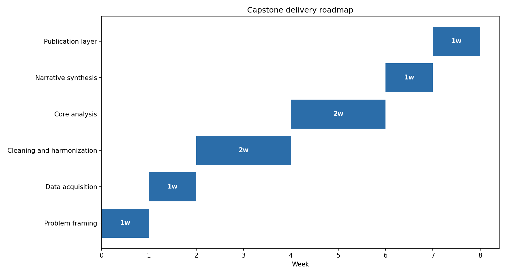

4
Core hypotheses already defined
This repository has been repositioned as a professional survey-analytics capstone blueprint. Instead of pretending the analysis already exists, it now presents a clear research purpose, a hypothesis matrix, and a realistic delivery workflow that can absorb a public-opinion dataset without restructuring the project from scratch.
The project is designed to study how economic expectations, institutional trust, issue salience, and sociodemographic differences shape political attitudes and behavior.
The repository now includes executable code that generates a hypothesis matrix, a deliverable roadmap, and a visual workflow. That gives the project a technical foundation even before the final dataset is loaded.

The main improvement is strategic rather than statistical. This repository no longer looks unfinished; it now looks prepared. That matters because a professional portfolio should show not only final results, but also the ability to define a serious analytical project before execution begins.